컴퓨터활용능력-1급 (2003-05-04 기출문제)
1과목: 컴퓨터 일반
1. 동영상을 압축하는 표준 압축방식 중 MPEG에 관한 설명으로 가장 거리가 먼 것은?
- 1988년 설립된 동화상 전문가 그룹을 의미하는 Motion Picture Experts Group의 약자로 동영상을 압축하는 방법을 연구하고 표준안을 제정하고 있다.
- 현재 압축 방법에 따라 MPEG1, MPEG2, MPEG3, MPEG4가 있고 MPEG7을 연구 중이다.
- MPEG4는 멀티미디어 통신을 전제로 만들어진 영상 압축 기술로서 낮은 전송률로 동영상을 보내고자 개발된 데이터 압축과 복원 기술이다.
- MPEG7은 ISO 13818로 규격화된 영상 압축 기술로서 디지털 TV, 대화형 TV, DVD 등 높은 화질과 음질을 필요로 하는 분야의 압축 기술이다.
(정답률: 53%)

2. 컴퓨터의 부품들을 상호 연결하기 위한 메인보드 상의통로를 버스(bus)라 하는데, 사용하는 버스의 종류에 따라 처리되는 데이터 양과 속도가 달라진다. 그러면 다음 항목 중 AGP 방식을 가장 잘 설명하고 있는 항목은?
- ISA 버스의 병목 현상을 개선한 방식이다
- ISA 버스 방식을 개선하여, 한 번에 32비트 데이터를 처리할 수 있도록 설계된 것이다.
- PCI 버스 방식을 개선한 것으로 고성능 그래픽(특히 3D)카드를 위한 인터페이스이다.
- 고속 펜티엄 PC를 겨냥한 방식으로 기존의 버스들과 호환성을 가지며 32비트 데이터 처리를 기본으로 하여 64비트까지 지원한다.
(정답률: 55%)
3. 다음 중 PC 업그레이드에 대한 설명으로 잘못된 것은?
- SCSI 방식의 하드디스크를 IDE 방식의 하드디스크로 업그레이드하여 속도를 빠르게 할 수 있다.
- 윈도우 가속기인 액셀러레이터가 포함된 그래픽 카드로 교환하면 모니터 화면의 스크롤(표시) 속도가 빨라진다.
- 메모리 업그레이드란 RAM의 용량을 늘리는 것을 의미하며 실행 속도가 빨라진다.
- 시스템 클록 속도와 모니터 주파수 값의 단위로 사용하는 메가 헤르쯔(Mhz) 단위는 값이 높을수록 시스템의 처리 속도가 빠르며 PC 속도와 성능을 나타낼 때 사용하는 단위이다.
(정답률: 58%)
4. 다음 중 인터넷 상에서 상호작용이 가능한 3차원 가상 세계를 표현할 수 있게 해주는 언어는?
- HTML
- VRML
- XML
- Dynamic HTML
(정답률: 69%)
5. [시작]-[시스템 종료]-[시스템 대기]를 클릭하고 잠시 후 원래 상태로 돌아가려고 할 때 암호를 물어 보았다. 다음부터는 대기상태 해제 후 암호를 물어 오지 않게 직접 설정할 수 있는 제어판의 항목은?
- 디스플레이
- 암호
- 바탕화면 테마
- 전원 관리
(정답률: 47%)
6. 인터넷의 IP 주소는 네트워크에 접속할 수 있는 수에 따라 클래스가 구분되는데 150대의 컴퓨터를 가진 소규모 기관에 가장 적합한 클래스는?
- A 클래스
- B 클래스
- C 클래스
- D 클래스
(정답률: 61%)
7. 김두한 이라는 사람이 아래와 같이 전자우편을 보냈다. 정진영이 메일을 읽은 다음, "전체회신" 버튼을 눌렀을 때의 설명 중 틀린 것은?(문제오류로 실제 시험장에서는 1,4번이 정답 처리 되었습니다. 여기서는 1번을 정답 처리 합니다.)
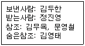
- “받는사람” 항목에는 김두한, 정진영이 표시된다.
- “참조” 항목에는 김무옥, 문영철이 표시된다.
- 정진영이 “전체회신”을 하는 메시지는 김영태에게는 전달되지 않는다.
- 정진영은 김두한이 보낸 처음 메시지를 김영태가 받았다는 사실을 알 수 있다.
(정답률: 84%)
8. 다음 중 Windows 98에서 네트워크 설정에 관한 설명으로 틀린 것은?
- ipconfig를 이용하여 네트워크설정에 관한 정보를 얻을 수 있다.
- ping을 이용하여 상대방 컴퓨터까지 연결되는 경로를 IP로 표시할 수 있다.
- ipconfig를 이용하여 네트워크 카드의 물리적 주소(MAC Address)도 확인할 수 있다.
- winipcfg를 이용하여 유동 IP 방식에서 IP주소를 다시 할당받을 수 있다.
(정답률: 58%)
9. Windows 98의 부팅 파일 중 Windows 98의 실제 실행 파일은?
- msgsvr32.exe
- win.com
- kernel32.exe
- command.com
(정답률: 61%)
10. 비디오 데이터를 구성하는 프레임 1개의 크기가 640 X 480 픽셀이고 픽셀당 3 바이트로 저장하려고 할 때 1초간 비디오 정보를 저장하기 위해 필요한 저장 용량은? (단, 비디오 데이터는 1초당 30 프레임으로 구성된다고 가정한다.)
- 약 900 KByte
- 약 9 MByte
- 약 26.5 MByte
- 약 1.7 GByte
(정답률: 53%)
11. 다음 중 한글 Windows 98의 [내 컴퓨터]에서 플로피 디스크 드라이브를 선택하여 포맷을 하려고 할 때 포맷의 형식과 옵션에 대한 설명으로 바르지 못한 것은?
- 전체 : 디스크 전체를 포맷하는 형식으로 포맷 후 불량섹터를 검색하고 부팅 가능한 디스크를 만든다.
- 시스템 파일만 복사 : 사용하던 디스크에 시스템 파일만 복사하여 부팅 가능한 디스크를 만든다.
- 빠른 포맷 : 사용하던 디스크의 불량 섹터는 검색하지 않고 파일에 대한 정보만 삭제한다.
- 포맷을 마친 후 디스크 정보 표시 : 포맷을 마친 후 디스크 공간, 불량 섹터 등 디스크에 관한 정보를 표시한다.
(정답률: 44%)
12. 다음 중 특정 주제에 대한 정보 교환 및 토론을 위해 전자우편 형태로 운영되는 인터넷 서비스는 무엇인가?
- 파일 전송
- 원격 접속
- 뉴스 그룹
- 메일링 리스트
(정답률: 61%)
13. 7bit ASCII 코드에 1bit 홀수 패리티(Odd Parity) 비트를 첨부하여 데이터를 송신하였을 경우 수신된 데이터에 에러가 발생한 것은 어느 것인가? (단, 우측에서 첫 번째 비트가 패리티 비트이다)
- 10101110
- 10111011
- 00110111
- 00110100
(정답률: 57%)
14. 다음 중 인터넷 익스플로러에서 수행할 수 있는 작업에 해당되지 않는 것은?
- 서버측 스크립트를 해독할 수 있다.
- FTP 서버에 접속할 수 있다.
- HTML과 자바스크립트 소스를 볼 수 있다.
- 텍스트와 그림을 저장할 수 있다.
(정답률: 62%)
15. 다음은 PC의 업그레이드 사례이다. 이 중 소프트웨어적인 업그레이드는 어느 것인가?
- 주 메모리(RAM)를 32Mbyte에서 64Mbyte로 늘인다.
- 중앙처리장치(CPU)를 Pentium 933MHz에서 Pentium 1.4GHz로 교체한다.
- 운영체제를 Windows 98에서 Windows 2000으로 바꾼다.
- 하드디스크를 12Gbyte에서 32Gbyte로 교체한다.
(정답률: 81%)
16. 한글 Windows 98의 탐색기에서 C드라이브의 testa 폴더에 있는 aa.txt파일을 마우스 왼쪽 버튼으로 C드라이브의 testb폴더에 끌어다 놓았다. 이는 파일의 어떤 작업에 해당하는가?
- 이동
- 복사
- 삭제
- 바로가기 아이콘 생성
(정답률: 73%)
17. 다음 중 전자우편(E-mail)의 송·수신에 관련된 직접적인 프로토콜이 아닌 것은?
- IMAP
- SMTP
- POP3
- PPP
(정답률: 72%)
18. 다음 중 인터넷 프로토콜이 아닌 것은?
- FTP
- HTTP
- URL
- TELNET
(정답률: 58%)
19. 다음 중 시스템 구성 편집기(sysedit)로 편집할 수 없는 파일은?
- admin.dll
- config.sys
- win.ini
- autoexec.bat
(정답률: 65%)
20. 한글 Windows 98에서 여러 개의 창을 이용하여 작업할 때 창의 전환에 사용하는 단축키는?
- [Alt] + [F4]
- [Alt] + [Tab]
- [Ctrl] + [Esc]
- [Ctrl] + [Alt] + [Del]
(정답률: 82%)
2과목: 스프레드시트 일반
21. 다음 그림에서 [B7] 셀에 입력된 수식 “=VLOOKUP(180000, B3:C6,2,TRUE)”의 결과값으로 올바른 것은?
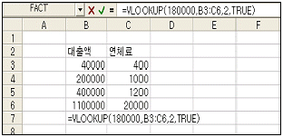
- 20000
- 1200
- 1000
- 400
(정답률: 53%)
22. 다음 중 배열 수식에 대한 설명으로 옳지 않은 것은?
- 배열 수식을 입력할 때에는 [Ctrl] + [Shift] + [Enter]를 누른다.
- 함수에서 배열을 직접 입력할 때 행의 구분 기호는 콤마(,)가 사용된다.
- 배열 수식을 이용하면 복잡한 수식을 보다 쉽게 구할 수 있다.
- 배열에는 한 개의 행이나 열로만 이루어진 것도 있다.
(정답률: 61%)
23. 다음 중 차트에 대한 설명이 틀린 것은?
- 전체 데이터 계열을 선택해서 데이터의 값 표시를 할 수 있으나 하나의 데이터 계열에는 데이터 값을 표시 할 수 없다.
- 차트에 포함되어 있는 문자열 데이터의 글꼴은 수정할 수 있다.
- 세로 막대형의 기본 차트 작성을 위한 단축키는 [F11]이다.
- 차트를 작성한 후 데이터를 추가하려면 차트메뉴에서 데이터 추가를 선택하면 된다.
(정답률: 66%)
24. 다음 그림에서 [A1]셀을 대상으로 [Ctrl] 키를 누른채 채우기 핸들을 끌었을 때 [A4]셀에 입력되는 값은?
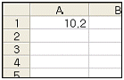
- 10.2
- 10.8
- 13.2
- 10.5
(정답률: 63%)
25. 다음 설명 중 틀린 것은 어느 것인가?
- 선택한 범위를 워크시트 화면에 가득 차게 보이게 하려면 [보기]-[확대/축소]에서 “선택 부분에 맞춤”을 선택한다.
- 페이지 설정에서 용지의 방향을 설정할 수 있다.
- 인쇄 미리 보기 화면에서도 페이지 설정을 할 수 있다.
- 도구 모음에서 를 누르면 인쇄 대화상자가 화면에 표시된다.
(정답률: 44%)
26. 아래와 같은 수식의 결과 값으로 올바른 것은?
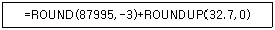
- 88033
- 88032.7
- 88032
- 87033
(정답률: 65%)
27. 다음 중 데이터의 정렬에서 오름차순 정렬에 대한 설명으로 틀린 것은?
- 텍스트의 경우 기호, 한글, 영문의 순서로 정렬된다.
- 논리값의 경우 거짓(false), 참(true)의 순서로 정렬된다.
- 빈 셀의 경우 항상 먼저 앞으로 정렬된다.
- 오류값의 경우는 순서가 없다.
(정답률: 64%)
28. 다음 중 매크로가 엑셀을 시작할 때 자동으로 열리도록 하기 위해서 매크로를 저장하는 개인용 매크로 통합 문서이름으로 올바른 것은?
- Function.xls
- Book1.xls
- Macro.xls
- Personal.xls
(정답률: 67%)
29. 다음 중 [파일]-[페이지 설정] 메뉴에서 설정할 수 없는 항목은 어느 것인가?
- 인쇄 제목으로 반복할 행 지정
- 전자메일로 보내기 여부 설정
- 눈금선 인쇄 여부 설정
- 인쇄 용지에 출력 페이지 자동 맞춤
(정답률: 72%)
30. [C9]셀에 컴활2급을 신청한 인원수를 구하는 배열 수식으로 맞는 것은?
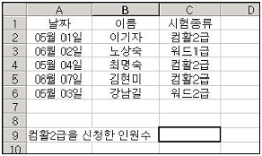
- {=COUNT(IF($C$2:$C$6=“컴활2급”,1,0))}
- {=SUM(IF($C$2:$C$6=“컴활2급”,1,0))}
- {=SUM(($C$2:$C$6=“컴활2급”),1,0))}
- {=COUNT(($C$2:$C$6=“컴활2급”,1,0))}
(정답률: 37%)
31. 다음 중 [표시 형식]이 “일반”인 경우에 데이터를 입력했을 때 셀에 표시되는 결과가 입력 형태와 다르게 나타나는 것은?
- “001155”
- (33)
- 200-100
- 3 1/2
(정답률: 48%)
32. 다음 중 사용자 정의 표시 형식의 작성 규칙에 대한 설명으로 옳지 않은 것은?
- 자릿수 표시에서 #은 불필요한 0은 표시하지 않을 경우에 사용한다.
- 사용자가 정의한 각 항은 양수;음수;0;텍스트의 순서로 서식이 결정된다.
- 3자리마다 콤마를 나타내려면 자릿수 사이에 콤마를 추가한다.
- 사용자가 정의한 서식 항이 2개 이면 첫째 항은 양수 형식, 둘째 항은 음수 형식, 그리고 0과 텍스트는 서식을 사용하지 않도록 지정한 것이다.
(정답률: 56%)
33. 아래와 같이 이벤트 프로시저를 정의한 경우, 명령 단추를 클릭했을 때 나타나는 결과에 대한 설명으로 옳은 것은?
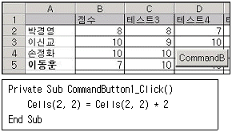
- [B2] 셀의 값이 16으로 바뀐다.
- [C2] 셀의 값이 18로 바뀐다.
- [B2] 셀의 값이 2로 된다.
- [B2:C3]의 블록내의 셀값이 모두 2배로 된다.
(정답률: 68%)
34. 레코드 관리의 조건 입력 대화상자에서 이름이 “김”씨가 아닌 레코드를 찾는 조건입력으로 올바른 것은?
- <>김
- <>김*
- !김*
- ~김*
(정답률: 64%)
35. 다음 목표값 찾기 기능을 실행해서 해결하고자 하는 내용을 올바르게 설명한 것은?
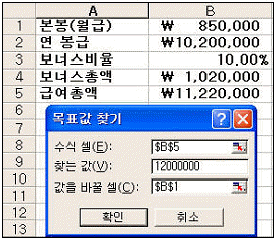
- 급여총액이 12,000,000원이 되려면, 월급이 얼마가 되어야 하는가.
- 월급이 850,000원이 되려면, 급여총액이 얼마가 되어야 하는가.
- 보너스가 850,000원이 되려면, 급여총액이 얼마가 되어야 하는가.
- 급여총액이 12,000,000원이 되려면, 보너스가 얼마가 되어야 하는가.
(정답률: 81%)
36. 엑셀의 외부 데이터 가져오기 기능에서 외부로부터 가져올 수 있는 형태의 데이터가 아닌 것은?
- Microsoft Query로 만든 데이터
- Text 형태의 데이터
- Web Query 형태의 데이터
- Java Script로 만든 데이터
(정답률: 65%)
37. [A1:A100]셀 까지의 범위에 차례대로 1부터 100까지가 입력되는 프로그램을 작성하기 위해 괄호 안에 들어갈 내용으로 알맞은 것은?
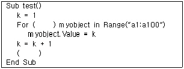
- Each, Step
- Next, To
- Each, Next
- Next, Step
(정답률: 52%)
38. 다음은 도구모음에 추가되어 있는 카메라 단추를 활용하기 위한 작업 순서를 나타낸 것이다. 올바른 순서로 연결된 것은?
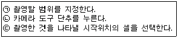
- (ㄱ), (ㄴ), (ㄷ)
- (ㄴ), (ㄱ), (ㄷ)
- (ㄷ), (ㄴ), (ㄱ)
- (ㄷ), (ㄱ), (ㄴ)
(정답률: 67%)
39. 다음 설명 중 작성된 매크로 모듈을 다른 통합 문서에 복사하는 과정 중에 불필요한 작업은 어느 것인가?
- 모듈이 들어 있는 통합 문서와 모듈을 복사해 넣을 통합 문서를 연다.
- [도구]-[매크로]메뉴를 선택한 후 "Visual Basic Editor"를 선택한다.
- 복사해 갈 문서에 복사해 온 모듈을 저장하기 위해 [삽입]-[모듈]을 누른다.
- 복사할 모듈을 선택하여 대상 통합 문서로 끌어서 놓는다.
(정답률: 49%)
40. 다음 중 추세선에 대한 설명으로 옳지 않은 것은?
- 데이터의 추세를 그래픽으로 표시하고 예측 문제를 분석하는 데 사용된다.
- 누적되지 않는 2차원 영역형, 가로 막대형, 세로 막대형, 꺾은선형, 주식형, 분산형, 거품형 차트 등의 데이터 계열에는 추세선을 추가할 수 있다.
- 3차원, 방사형, 원형, 표면형, 도넛형 차트에는 1가지 계열에 대해서만 추세선이 가능하다.
- 추세선에 사용된 수식을 추세선과 함께 나타나게 할 수 있다.
(정답률: 71%)
3과목: 데이터베이스 일반
41. 다음 중 입력 마스크의 속성에 관한 설명으로 옳지 않은 것은?
- 두 번째 부분은 선택 사항으로 서식 문자를 저장하는지를 정의한다. 값이 “1”이나 공백이면 저장하고 “0”이면 저장하지 않는다.
- 첫 번째 부분은 마스크 정의 문자와 마스크 문자열을 정의한다.
- 입력마스크는 세미콜론(;)으로 나눈 세 개의 부분으로 구성된다.
- 세 번째 부분도 선택 사항이며 입력하는 위치를 가리키는 자리 표시를 정의한다.
(정답률: 52%)
42. 다음 보고서에서의 ‘거래처명’과 같이 컨트롤의 데이터가 이전 레코드와 동일한 경우에는 이를 표시(혹은 인쇄)되지 않도록 설정하는 방법으로 가장 적절한 것은?
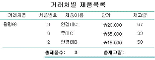
- 해당 컨트롤의 ‘확장가능’ 속성을 ‘예’로 설정한다.
- 해당 컨트롤의 ‘중복내용 숨기기’ 속성을 ‘예’로 설정한다.
- 해당 컨트롤의 ‘화면 표시’ 속성을 ‘아니오’로 설정한다.
- 해당 컨트롤의 ‘누적총계’ 속성을 ‘전체’로 설정한다.
(정답률: 79%)
43. 직원(사원번호, 부서명, 이름, 나이, 주소, 직급)의 테이블에서 직급이 사원인 직원의 급여를 10%씩 증가시키는 질의문으로 옳은 것은?(문제오류로 실제 시험장에서는 모두 정답 처리 되었습니다. 여기서는 1번을 정답 처리 합니다.)
- select 급여 update 직원 set 급여=급여*1.1
- update 급여 set 급여=급여*1.1 where 직급=‘사원’
- update 직원 set 급여=급여*1.1 where 직급=‘사원’
- select * update 직원 set 급여=급여*1.1 where 직급=‘사원’
(정답률: 70%)
44. 다음 중 집단함수가 아닌 것은 어느 것인가?
- AVG( )
- ABS( )
- COUNT( )
- MAX( )
(정답률: 69%)
45. 다음은 테이블의 조회 기능에 관련된 속성에 대한 설명이다. 가장 옳지 않은 것은?(문제 오류로 실제 시험장에서는 2,3번이 정답 처리 되었습니다. 여기서는 2번을 정답 처리 합니다.)
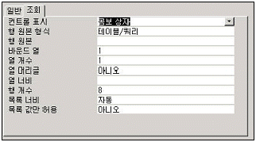
- 컨트롤 표시 : 필드에 데이터를 입력할 때 사용하는 컨트롤의 유형 지정
- 행 원본 형식 : 원본으로 사용 될 데이터 지정
- 목록 너비 : 콤보상자나 목록 상자의 너비 지정
- 열 개수 : 콤보상자나 목록 상자에 표시되는 열의 수 지정
(정답률: 76%)
46. 다음 중 폼 속성의 데이터 항목에서 ‘레코드 잠금’ 속성에 대한 설명으로 가장 옳지 못한 것은?
- 여러 사용자가 동시에 레코드를 사용할 때 잠그는 방법을 지정한다.
- 속성 값으로 ‘편집한 레코드’를 선택하면, 편집한 레코드를 다른 사용자가 편집할 수 없게 하며, 이를 독점 잠금이라고 한다.
- 속성 값으로 ‘모든 레코드’를 선택하면, 폼이나 보고서 혹은 쿼리에서 사용중인 테이블이나 쿼리를 다른 사용자가 편집할 수 없도록 잠근다.
- 속성 값으로 ‘잠그지 않음’을 선택하면, 둘 이상의 사용자가 동시에 같은 레코드를 편집할 수 없게 하며 이를 공유 잠금이라고 한다.
(정답률: 73%)
47. 다음 중 데이터베이스의 특징으로 가장 거리가 먼 것은?
- 프로그램에의 의존성
- 데이터의 공유
- 프로그래밍 생산성 향상
- 데이터의 일관성 및 무결성 유지
(정답률: 63%)
48. 다음 중 보고서를 구성하는 구역(요소)으로 가장 거리가 먼 것은?
- 그룹 머리글
- 페이지 머리글
- 보고서 머리글
- 폼 머리글
(정답률: 69%)
49. 다음 질의문 중에서 가장 올바르지 못한 것은?
- select * from 학생 a;
- select 학생.* from 학생;
- select 학생.* from 학생 a;
- select a.* from 학생 a;
(정답률: 36%)
50. 다음 중 보고서에서 그룹 머리글의 ‘반복실행구역’ 속성을 ‘예’로 설정한 경우에 대한 설명으로 가장 적절한 것은?
- 해당 머리글이 매 레코드마다 표시된다.
- 해당 머리글이 매 그룹의 시작과 끝 부분에 표시된다.
- 해당 머리글이 매 페이지마다 표시된다.
- 해당 머리글이 보고서의 시작과 끝 부분에 표시된다.
(정답률: 61%)
51. 필드에 0보다 크고 100보다 작은 숫자만 입력할 수 있도록 지정하려고 한다. 이 경우 다음 중 어떤 속성을 이용해야 하는가?
- 유니코드 압축
- 필수 여부
- 인덱스(Index)
- 유효성 검사
(정답률: 70%)
52. ‘제품’ 테이블의 ‘제품이름’ 필드는 주키(PK)가 아니면서도 동일한 값이 두번 이상 입력되지 않도록 설정하고자 한다. 가장 바람직한 것은?
- 해당 필드에 ‘중복불가능’ 색인(index)을 설정한다.
- 해당 필드에 ‘중복가능’ 색인(index)을 설정한다.
- 해당 필드에 ‘유효성 검사 규칙’을 지정한다.
- 해당 필드에 ‘빈 문자열 허용’을 ‘아니오’로 설정한다.
(정답률: 70%)
53. 관계데이터베이스 표준 언어인 SQL에서 테이블을 새로 만들 때 사용되는 명령은 CREATE TABLE이다. 이 명령이 속하는 언어는 다음 중 어느 것인가?
- 데이터 정의어(DDL)
- 데이터 제어어(DCL)
- 데이터 조작어(DML)
- 데이터 설정어(DSL)
(정답률: 59%)
54. 다음과 같은 제어문을 실행하였을 때 sum의 값은 얼마인가?
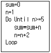
- 3
- 4
- 8
- 9
(정답률: 47%)
55. 다음 중 페이지 번호 대화상자의 각 항목에 대한 설명으로 가장 옳지 않은 것은?
- N/M 페이지 : ‘현재 페이지 번호/전체 페이지 수’ 형식으로 표시
- 페이지의 아래쪽 [바닥글] : 페이지 바닥글에 페이지 번호 표시
- 맞춤 [안쪽] : 양면 인쇄시 짝수 번호를 왼쪽 면에, 홀수 번호를 오른쪽 면에 표시
- 첫 페이지에 번호 표시 : 첫 페이지에 페이지 번호 표시 여부 설정
(정답률: 70%)
56. 다음 중 탭 순서(Tab Order) 설정에 대한 설명으로 가장 적절한 것은?
- 폼 보기 상태에서 화살표(방향이동) 키를 누룰 때 옮겨가는 커서의 순서를 지정하는 것이다.
- 보고서 컨트롤에만 적용되고 폼 컨트롤에는 적용되지 않는다.
- 폼에서 레이블이나 명령 버튼에는 적용되지 않는다.
- ‘탭 정지’ 속성을 ‘아니오’로 지정한 경우 탭 순서는 큰 의미가 없다.
(정답률: 44%)
57. 다음 중 기본 폼과 하위 폼을 연결하는 방법에 대한 설명으로 가장 적절하지 않은 것은?
- 두개 이상의 연결 필드를 지정할 때는 필드 이름을 기호(“&”)로 구분한다.
- 기본 폼과 하위 폼을 연결할 필드의 데이터 형식은 같거나 호환되어야 한다.
- 기본 폼과 하위 폼을 연결할 필드 이름을 지정한다.
- 한 테이블을 기본으로 해서 또 다른 테이블의 작업을 동시에 할 수 있도록 한다.
(정답률: 48%)
58. <인쇄> 버튼에 대한 클릭 이벤트 프로시져는 다음과 같다. 이에 대한 설명으로 가장 옳지 않은 것은?(문제오류로 실제 시험장에서는 모두 정답 처리 되었습니다. 여기서는 1번을 정답 처리 합니다.)
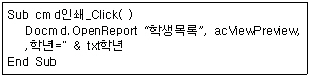
- 버튼을 클릭하면 ‘학생목록’ 보고서를 ‘미리보기’ 형태로 연다.
- 현재 폼에는 ‘txt학년’이라는 컨트롤이 존재하는 것으로 볼 수 있다.
- 현재 폼이 사용하는 데이터에는 ‘학년’이라는 필드가 존재하는 것으로 볼 수 있다.
- ‘학년’ 필드의 값이 ‘txt학년’ 컨트롤에 입력된 값과 동일한 데이터만이 나타나게 된다.
(정답률: 74%)
59. 다음 중 RecordSet 개체에 속하지 않는 메서드는?
- Open
- Close
- AddNew
- Execute
(정답률: 61%)
60. 아래의 ‘사원’ 테이블에서 부서명과 이름이 각각 ‘업무부’, ‘임경수’인 사원에 대한 정보를 조회하고자 한다. 가장 적합한 쿼리는?
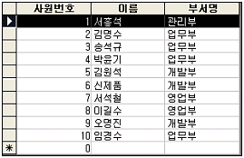
- select * from 사원 where 이름 Is “임경수” and 부서명 like “업무부”
- select * from 사원 where 이름 = “임경수” and 부서명 like “업무부”
- select * from 사원 where 이름 = “임경수” and 부서명 Is “업무부”
- select * from 사원 where 이름 Is “임경수” and 부서명 Is “업무부”
(정답률: 62%)